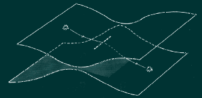

Hipótesis
(texto/palabras) = sintaxis
(hipertexto/texto) = metasintaxis
La sobreabundancia de información
equivale a visualizar una trama. Cualquier palabra, o proceso, o forma
empujada al límite de su potencial, invierte sus características
y la vuelve una forma complementaria.
Marshall McLuhan
Paisajes de Papel
En su búsqueda por visualizar espacios extra dimensionales, el
matemático alemán Georg
Riemann desarrolló una metáfora muy sencilla: dos hojas
de papel -cada una representando un universo bidimensional- pegadas en
un pequeño tramo lineal ubicado al centro de cada hoja. Vistas
en corte serían dos hipérbolas cuyas curvas se encuentran
en el centro. Luego imaginó a un ser bidimensional transitando
de una hoja a la otra pasando por este tajo - abertura. Este tránsito
consiste, efectivamente en un salto extra - dimensional: se ha movido
de un mundo a otro con las mismas leyes, a otra "planilandia".
Quizá, este ser está desorientado porque el paisaje ha cambiado
a pesar de la coherencia lineal de su traslado. Para un espectador tridimensional,
quizá pueda haberse reflejado, pero para este ser bidimensional,
este planilandés, este reflejo no es perceptible. Este tránsito
momentáneamente ha creado la tercera dimensión que paradójicamente
consiste en un tajo vacío y carente de espacio concreto.
Este ejemplo llevado a la vida cotidiana: Al subir a un ascensor, nosotros
nunca vemos el conducto vertical de ascenso, a pesar de ello, sabemos
por un proceso de inferencia que nos hemos movido algo puesto que
el paisaje cambia ostensiblemente cuando las puertas del ascensor de reabren.
Primero: Cabe reconocer la desventaja del texto escrito para traer una
presencia espacial respecto de una imágen. Esta diferencia, coyuntural
en el debate del hipertexto, ha diferenciado desde siempre a las artes
vervales de las artes visuales.
Segundo y más importante: este modelo de representación
de dos universos planos y paralelos conectados por este "agujero
negro de cero largo" es un modo de visualizar la vinculación
de los textos. La física lo llama "superficie multiconectada",
en la lectura se llama "hipertexto".
Los textos impresos son "planilandia". La interfaz natural para
los textos son nuestros ojos, que se mueven de izquierda a derecha, de
arriba hacia abajo pero nunca, a través. Podemos físicamente
dar vuelta a la página pero este acto resulta periférico
a la continuidad textual, es un requierimento físico que apela
a la finitud del formato página: la sintaxis interna del texto
le da igual valor al caracter "espacio" que a dar vuelta a la
página. (incluso, yendo más lejos, lo podríamos representar
linealmente).
La presencia de hipervínculos en la continuidad del texto interfiere
y varía la continuidad sintáctica. La opción estéctica
del hipertexto apela a estas posibilidades de irrupción, tanto
temática como estructuralmente. Al modo de este tajo en planilandia,
los vínculos le suman una coordenada espacial a este medio primordialmente
temporal, abriendo una panorama de posibilidades al autor. El acto de
traspasar por estos vínculos siendo una continudad interna del
lenguaje, escencialmente crea espacio.

El acto de leer en hipertexto implica una forma solapada de escritura.
El proyecto original de hipertexto es el proyecto Xanadu de Theodor Holm Nelson. Tomó el nombre Xanadu del poema de Taylor Coleridge